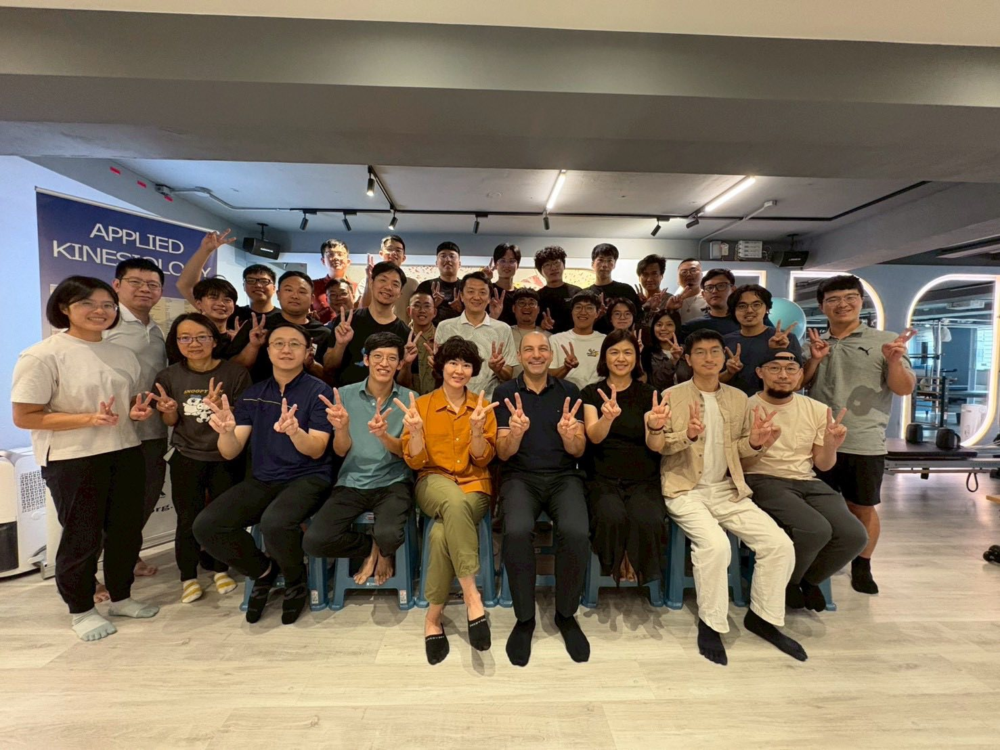
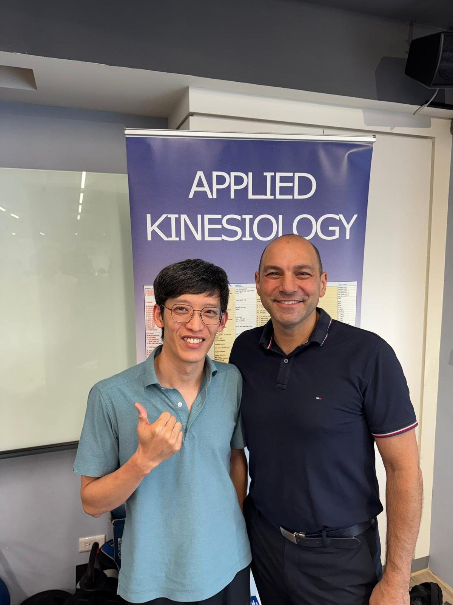

PAK stage2-Module3,4
PAK stage2-Module3,4
這三天的知識轟炸，還包含了自己的老本行經絡針穴系統也在這個系統裡看到，雖然跟原汁原味的古典針灸邏輯不一樣，但大致上精神與應用是相似的。
學到目前，整套系統的診斷工具是fMMT，也就是操作了單一變相後，馬上後側肌力啟動是否有恢復，直接改變了神經系統對周邊MSK的迴路控制。 腦洞確實大開，也讓我再次重新審視目前自己會的東西，與fMMT的連結應用。
在一個我以為相對比較踏實實際的領域裡，再次看到了以往熟悉的方向，我往這個「理想」方向前進的同時，看到一群人向著我出發的地方前進，而我們在這們PAK裡相遇、交流，讓我也想要再次思考至今的所見所聞，以及我所以為在追求的「真」是什麼🤔
世界與人體就是這麼有趣，總是讓你知道地球是圓的，你以為的其實不是你以為的，但又讓你思考那我以為的到底是什麼？ 這似乎目前還沒有個明確的答案，也或許這個答案就根本不「明確」，或許答案就不是你以為的那個「樣子」 🤯🤯🤯
走了這麼久，才發現自己似乎從來沒有離開過🤣🤣🤣
腦洞大開，真的好玩！

